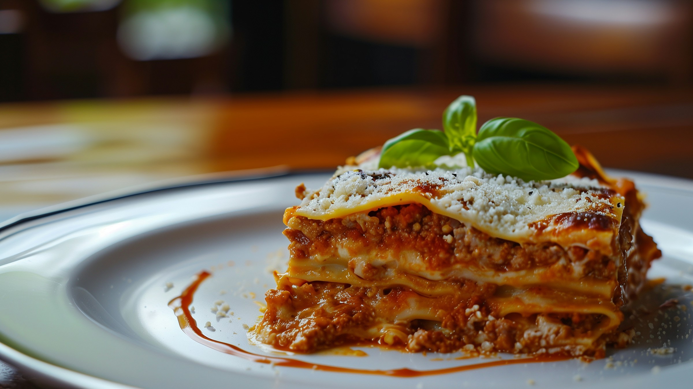

Lasagna
Home

Description
Lasagna, also known by the plural form lasagne, is a type of pasta made in wide, flat sheets. It originates in Italian cuisine, where it is served in a number of ways, but is most often served as a casserole made by stacked layers of pasta, alternating with fillings that could consist of meat, dairy, vegetables, and sauces. Typically, cooked pasta is assembled with the aforementioned fillings, topped with grated cheese, and then baked in an oven (al forno). Regional variations of this are found across Italy,[2] along with Americanized versions worldwide.
Ingredients
Meat Sauce:
- 1 pound lean ground beef
- 1 onion, choped
- 1 (4.5 ounce) can mashroom, drained
- 1 (28 ounce) jar spaghetti sauce
Cheese Filling:
- 1 (16 ounce) packgae cotton cheese
- 1 print part-skim ricotta cheese
- 2 large eggs
- 1/4 cup grated Parmesan cheese
Other:
- 1 (16 ounce) package lasagna noodles
Steps
- Gather all ingredient, and preheat the oven to 350 degrees F (175 degrees C).
- Make sauce: Heat a large skillet over medium-high heat. Cook and stir ground beef in the hot skillet until browned and crumbly, 5 to 7 minutes. Add onion and mushrooms; sauté until onions are transparent. Stir in pasta sauce and cook until heated through. Set aside.
- Make filling: Combine cottage cheese, ricotta, eggs, and Parmesan in a medium bowl and set aside.
- Spread a thin layer of meat sauce in the bottom of a 13x9-inch dish. Layer with uncooked lasagna noodles, cheese filling, mozzarella, and meat sauce. Continue layering until all components are used, reserving 1/2 cup mozzarella. Cover the dish with aluminum foil.
- Bake in the preheated oven for 45 minutes. Remove foil and top with reserved 1/2 cup mozzarella. Continue baking until cheese is melted, about 15 more minutes. Let lasagna stand for 10 to 15 minutes before serving.
- Serve warm and enjoy!